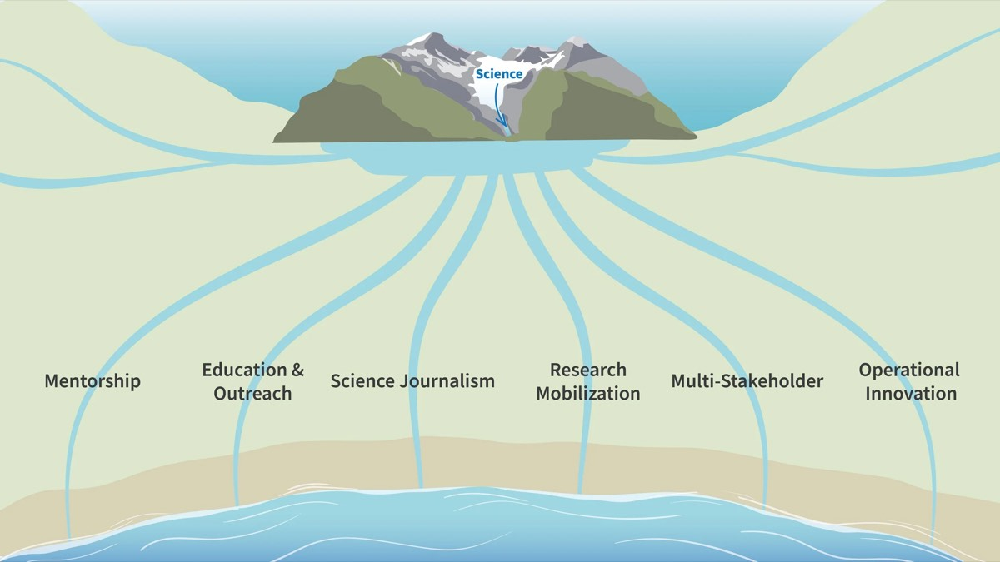
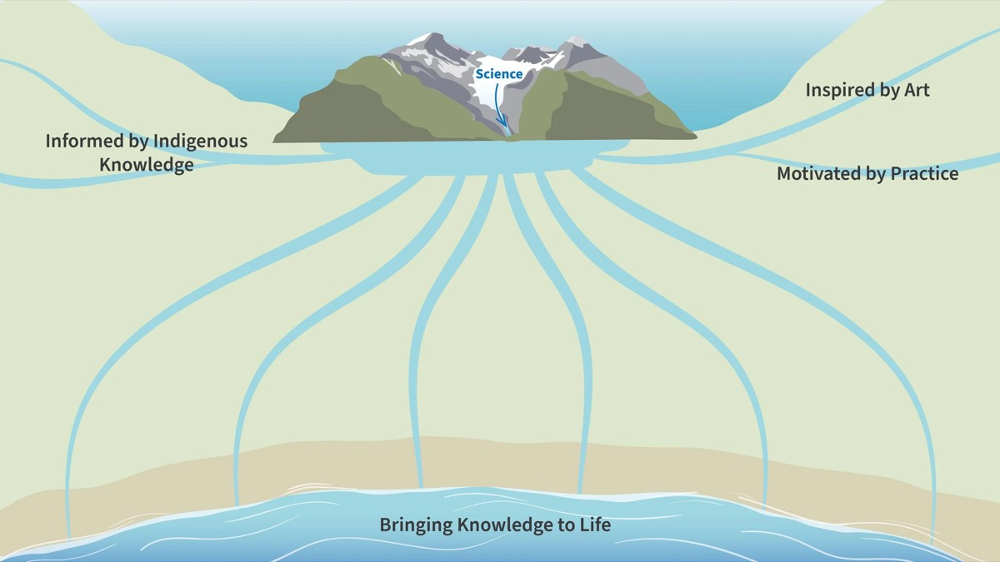
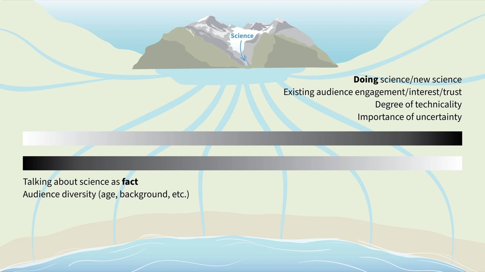

Vous êtes-vous déjà demandé si vous aviez votre place dans la communauté de la communication scientifique ?
Nous avons récemment animé une conversation au congrès du Science and Technology Awareness Network sur la diversité de ce secteur de la communication scientifique, et sur la façon dont tous nos travaux (qui servent des publics différents et exigent des techniques différentes) se recoupent le long d'un spectre. À mesure que notre entreprise grandissait, nous avons délimité quatre branches dans notre organisation, une pour chacun des courants de la communication scientifique dans lesquels nous travaillons : Éducation et vulgarisation, Mobilisation de la recherche, Partenariats multipartites et Innovation opérationnelle. Il existe bien d'autres courants le long du spectre de la communication scientifique, par exemple le mentorat et le journalisme scientifique. Mais ces quatre-là ont commencé à se cristalliser dans notre travail et nous ont aidés à orienter la structure de notre équipe et le choix de nos outils et de nos stratégies. Ces courants nous ont aussi été très utiles pour communiquer avec nos clients, dont certains utilisaient malheureusement des stratégies inadaptées à leur public, ou travaillaient carrément dans le mauvais courant.
C'est sans doute à ce moment-là qu'on a l'impression de « ramer à contre-courant ».
Nous ne suggérons pas du tout qu'un communicateur scientifique doive entrer dans une seule case, ou choisir une voie et s'y tenir, mais il est très utile de réfléchir au travail que nous faisons et de trouver des moyens concrets de l'expliquer aux gens de l'extérieur comme de l'intérieur du secteur. Aujourd'hui encore, alors que ChatGPT, un agent conversationnel d'intelligence artificielle, peut faire des recherches sur un sujet et résumer en 10 secondes les connaissances disponibles en ligne, il est essentiel de prendre un moment pour réfléchir à ce que nous faisons en tant que communicateurs scientifiques et à la façon dont nous le faisons.

Voici une analogie visuelle qui nous a été utile. En haut de l'illustration, vous remarquerez le Glacier de la science, qui alimente tous les courants de notre travail. Nous utilisons cette analogie pour garder le cap quand certains travaux de graphisme dérivent vers les beaux-arts, ou quand des demandes de l'industrie ressemblent à du marketing. Nous disons aussi qu'il est important de « goûter l'eau » de temps en temps et de s'assurer que rien, comme l'écoblanchiment ou les biais, n'a contaminé l'eau de la science, pour ainsi dire.
Dans cette version de l'illustration, nous avons ajouté des courants pour le mentorat et le journalisme scientifique, qui ne sont pas des branches de Fuse. Nous connaissons toutefois de nombreux organismes et collègues en communication scientifique dotés d'outils et de publics cibles qui leur sont propres, et nous voulions les représenter ici pour lancer une discussion sur les autres courants qui pourraient exister.
Il est aussi important de noter que la frontière entre ces courants est assez floue, et que certains projets couvrent plusieurs courants selon le produit précis sur lequel nous travaillons et le public cible précis de cette expérience. Dans notre prochain article, Sonya présentera la façon dont nous concevons les publics cibles de ces différents courants et les outils propres à chaque branche, ainsi que les principes communs à tout notre travail de communication scientifique.

Un autre concept important pour nous dans cette analogie est que d'autres cours d'eau rejoignent le glacier de la science. Notre travail s'appuie souvent sur les savoirs autochtones et il est presque toujours motivé par l'amélioration d'une pratique en éducation environnementale ou en gestion durable des terres. L'approche propre à Fuse s'inspire aussi de l'art. Si vous vous demandiez ce que signifie Fuse : ce n'est pas un acronyme. Le nom vient de l'idée de fusionner la science et l'art, de fusionner différents systèmes de connaissances et de relier différents groupes.
Et où s'écoule toute cette science inspirée, motivée et éclairée ? Jusqu'à la mer, où nous donnons vie au savoir, généralement avec des visuels engageants, mais aussi avec des expériences en personne ou virtuelles, et en rendant des concepts complexes réels et concrets pour les gens.
À mesure que notre entreprise grandissait, nous avons accru notre capacité et nos domaines de spécialité ont évolué. Cela m'a permis de travailler de nouveau davantage dans mon univers familier de la vulgarisation en STIM, mais a aussi créé une tension (une bonne tension) sur ce à quoi ressemblait une « bonne communication scientifique ». Nous avons compris qu'il existait tout un spectre de science : une science très établie, à longue durée de vie, que nous pouvions traiter comme un fait et simplifier pour le grand public, et une science très récente, pas encore prouvée, plutôt en cours de vérification. À cette extrémité du spectre, nous ne pouvons pas supprimer l'explication de la façon dont un résultat scientifique a été obtenu (les méthodes), ni éviter de parler de l'incertitude et des covariables. Le faire peut miner la confiance de l'industrie, des gouvernements ou du public envers la science, si une semaine ils lisent un résultat (les œufs sont bons pour la santé) et que la semaine suivante des « scientifiques » leur disent le contraire (les œufs sont mauvais pour la santé). Comprendre que nous devons expliquer les nuances scientifiques sans exagérer la portée des résultats nous a permis de bâtir des relations solides avec les chercheurs.

Une autre différence dans la façon dont chacun de nous travaille avec la science tient à la prise en compte de la diversité de certains publics, comme le grand public, et de leurs valeurs, de leur aisance avec la science et des obstacles d'accessibilité qu'ils rencontrent. Certains sujets sont très étrangers au grand public : nous commençons donc par des comparaisons pertinentes et cherchons des exemples concrets. À l'autre extrémité du spectre, nous synthétisons la science d'un domaine précis pour des praticiens engagés, intéressés et qui font confiance à cette science appliquée ; les outils que nous utilisons sont donc très différents.
Lorsque de nouveaux organismes variés nous ont trouvés, nous sommes sortis de notre clientèle habituelle pour aller vers de nouveaux secteurs et de nouveaux pays. La portée de nos projets a alors commencé à glisser vers le travail de politiques publiques, parfois davantage vers la mise en page que vers le design d'information, et souvent vers beaucoup de travail de communication standard qui ne rejoignait pas pleinement la valeur de notre entreprise : influencer les pratiques durables. Souvent, les clients viennent nous voir avec un mot à la mode ou un nouveau produit tendance en tête, alors qu'ils ont en réalité besoin de mieux comprendre leur public et de se concentrer sur les outils adaptés à leur objectif. C'est là que l'idée de délimiter notre travail et de mieux parler des tactiques et des outils adaptés à chaque public nous a aidés à accompagner nos clients vers le succès et à produire des outils de communication scientifique efficaces.